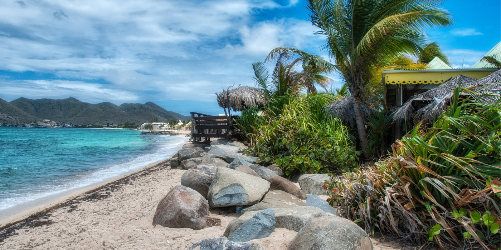

Saint Martin
Saint Martin Island, located in the northeastern part of the Bay of Bengal, is a small island in Bangladesh, about 9 km south of the tip of the Cox's Bazar-Teknaf peninsula. It forms the southernmost part of Bangladesh and is approximately 3 km in area. The island is situated about 8 kilometers west of the northwest coast of Myanmar, at the mouth of the Naf River. It is connected to the mainland by a narrow strip of land that is submerged at high tide, and there is a small adjoining island called Chera Dwip, which is separated at high tide
